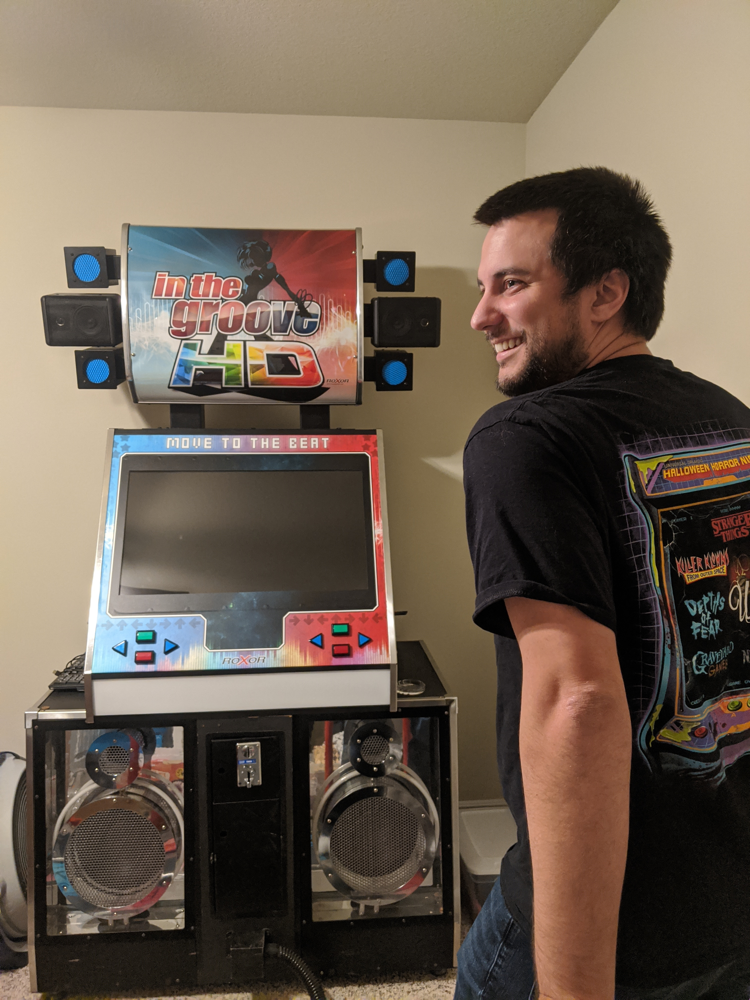

Derrike's Story
Derrike is a family man who enjoys hanging with friends, playing fighting games, woodworking, and working in the IT field. A man of many talents, he has versed obstacles and realized untold dreams. Many of his accomplishments come from a will to never give up while expertly engaging in fun filled activities with his cohorts
Fighting Spirit
Derrike breathes fighting games. A fighting game consist of two digital opponents who do different “moves” and attacks to whittle down the opponents life bar.
Derrike grew up playing these games in the arcade. As a kid, he would go to the mall and spend countless hours playing anyone. Starting out, he lost a lot. This drove him to be the best.
When arcades became less popular, Derrike’s hunger for competition grew. Not satisfied with dominating the mall locals, he turned to sanctioned events to meet his demand for displaying dexterous skill on the 'sticks'.
This tenacity eventually led him to winning a major fighting game championship. One of his biggest accomplishments. When asked what led to this victory he responds:
Training for everyday eventually brought me to many different major competitors across the country. I trained once a day for five years straight to win the belt”
Woodworking Family

Woodworking, a grand hobby for Derrike, puts him a position of power and control. Woodworking involves planning cuts to make a shape, using glue and screws to manage the process, sand for smoothing, routing edges for polish, and drilling holes
I enjoy it (woodworking) because I bring projects to life. It is also a great way to spend time with my Dad”
He has many projects under his belt, including a rebuilt ‘In The Groove HD’ cabinet! Other projects he has completed are arcade sticks and cabinets, projector screen, a computer desk for him and his wife, and a belt case for his championship belt
A Journey though Information Technology

Derrike works in the Information Technology (IT) field. He has always been drawn to computers growing up.
His first computer was a 133 MHZ Dell. He loved playing mine sweeper, Diablo, and StarCraft during his childhood. He sees these games as a great way to meet and spend time with friends
His chosen professional has brought him to a fulfilling career path. There is always something new to learn or some project to develop.
Without the computer, I don’t know where I’d be
Friends? Family? Fun!
Derrike enjoys his time with friends and family. He helps organize a "guys night" every week to keep in touch with the majority of his friends. Here they plan He also loves planning trips with his friends. One annual trip that he invites his friends to is Halloween Horror Nights. He loves to see the reaction of his friends when they go through a spooky haunted house
All of his hobbies seem to point to one mechanism. Hanging and enjoying friends and family company.
Growing up in the arcade, led him to his wife, Kristina. Playing video games pushed him to discover friends and spend time with them. His pursuit of IT knowledge established a fruitful career in a challenging field where he is sought out for his acumen and friendship. Even his woodworking has brought him closer to his Dad.
All of these hobbies pressed him to new adventures across the country or unforgettable experiences with loved ones. He even made his wife her own arcade stick so they can spend more time together during his travels.
Kiss butt, lay low, and pay money to the man
a joke he often says with a shy smile. A joke with a demeanor that says, “Life is good” while trying to make you laugh.